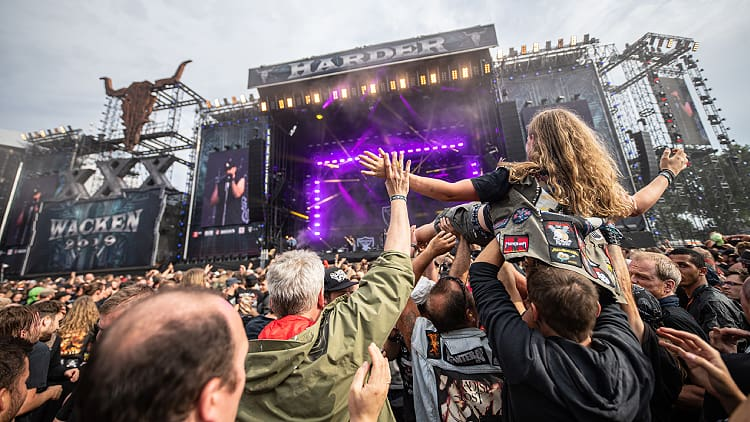
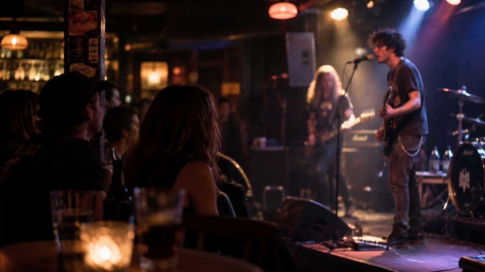

FESTIVALGUIDE
5 TIPPS FÜR DEIN NÄCHSTES FESTIVAL
Von der richtigen Vorbereitung bis zum perfekten Festivalerlebnis – mit diesen Tipps bist du bestens vorbereitet.
BEITRAG LESEN ↗ROCK'N'FIND · UNSER BLOG
Von persönlichen Musikempfehlungen bis zu spannenden Festivals – entdecke unsere Geschichten rund um die Welt des Rocks.
FESTIVALGUIDE
Von der richtigen Vorbereitung bis zum perfekten Festivalerlebnis – mit diesen Tipps bist du bestens vorbereitet.
BEITRAG LESEN ↗
MUSIKEMPFEHLUNGEN
Welche Rocksongs laufen bei uns gerade auf Dauerschleife? Entdecke unsere persönlichen Favoriten des Monats.
BEITRAG LESEN ↗
FESTIVALS & EVENTS
Entdecke spannende Festivals, beeindruckende Liveauftritte und musikalische Highlights aus Liechtenstein und der Umgebung.
BEITRAG LESEN ↗
KOLUMNE
Kleine Bühnen, grosse Gefühle: Warum lokale Rockbands für unvergessliche Konzertabende sorgen und die regionale Musikszene so besonders machen.
BEITRAG LESEN ↗
ROCKGESCHICHTE
Ein brennendes Casino, ein Konzert auf dem Hausdach und Rockmusik mitten in der Antarktis. Entdecke fünf unglaubliche Momente, die Rockgeschichte geschrieben haben.
BEITRAG LESEN ↗